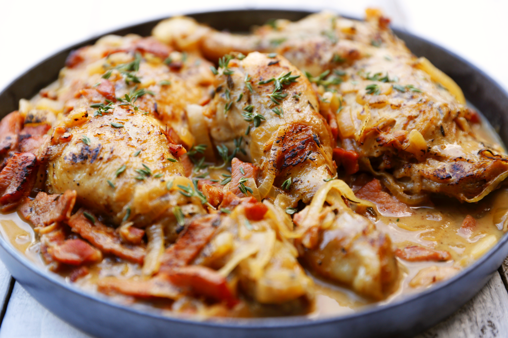

Baked chicken with cider and smoky bacon
The weather has turned in my part of the world, and autumn has rushed in with crisp mornings, clear azure skies and the promise of cool evenings. It’s a short season, and every day is to be cherished. It’s a joy to be cooking food for the season – warming and hearty – stews and soups, roasts and puddings, root vegetables with earthy herbs like thyme, tarragon and rosemary.
This casserole is rich and filling; perfect for the season, especially after a day in the outdoors. When making it try and find cider made from fresh apple juice, rather than concentrate, and look for a dry, not sweet variety. We love drinking cider in the summer, and the brew from the Barossa Cider Co. is one of our favourites. It is perfect for this dish. Serve with creamy mashed potatoes and steamed green beans and some crusty bread to sop up the leftover sauce.
Serves 4
- 1 tablespoon olive oil
- 4 chicken Maryland pieces, skin on
- 4 rashers smoky bacon, chopped
- 1 medium sized brown onion, peeled, halved and sliced
- 1 clove garlic, finely chopped
- 4-5 sprigs of thyme, plus more for serving
- 2 heaped teaspoons Dijon mustard
- 450 ml dry apple cider
- sea salt and black pepper
Preheat oven to 180 C. Place a large frying pan over a medium heat and add the olive oil. Add the chicken and brown the pieces all over until golden brown. Remove from the pan, and set aside. Place the onion, garlic, bacon and thyme into the pan and saute until the onion is softened. Take care not to burn the garlic. Turn the heat up to high. Pour in the cider and cook for a couple of minutes before adding and Dijon mustard. Use a wooden spoon to stir and scrape off any of the delicious crispy bits stuck to the bottom of the pan. Remove from the heat. Place the sauce in the bottom of a medium-sized casserole dish. Add the chicken pieces in a single layer and spoon over some of the sauce. Season well with salt and freshly ground black pepper. Cover tightly with foil and bake in the oven for 35-40 minutes. Remove the foil and spoon a little more of the sauce over the chicken and return to the oven for another 10 minutes. Remove the cooked thyme before serving and scatter over about a tablespoon more of fresh thyme leaves, and another generous grind of black pepper.